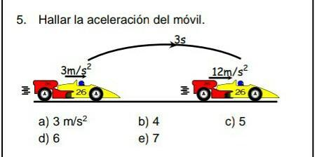

INFORMACION SOBRE EL TEMA
Bienvenido a la sección de información, aquí podrás hacer una retro alimentación del tema propuesto en el juego y además si deseas profundizar mas el tema, puedes aprender con la siguiente información:
¿QUE ES LA ACELERACION?
La aceleración es el cambio de velocidad al tiempo transcurrido en un punto A y B, esta durante todo el movimiento del cuerpo es constante, la aceleración hace parte de una de las formulas del movimiento uniformemente acelerado, la cual es: vf-v0/t, donde VF es la velocidad Final, V0 o Vi es la velocidad inicial y t es el tiempo; una vez hecho la formula la aceleracion se representara en m/s^2 como la letra a
.jpg)
Tipos de Aceleración Movimiento Uniformemente Acelerado
Entre los tipos de Aceleración encontrados en el Movimiento Uniformemente Acelerado están los siguientes:
Aceleración Positiva: Simplemente se considera que una aceleración es constante cuando la velocidad con la que va el cuerpo en movimiento aumenta, es decir: vf mayor que vi.
.jpg)
Aceleración Negativa: Por el contrario se considera que una aceleración es constante cuando la velocidad con la que va el cuerpo en movimiento disminuye, es decir: vf menor que vi.

WebGrafia
Informacion Basada en: Movimiento Uniforme Acelerado (Mua) y Movimiento Uniformemente Acelerado (M.U.A)